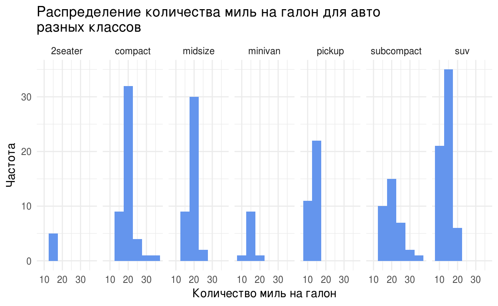
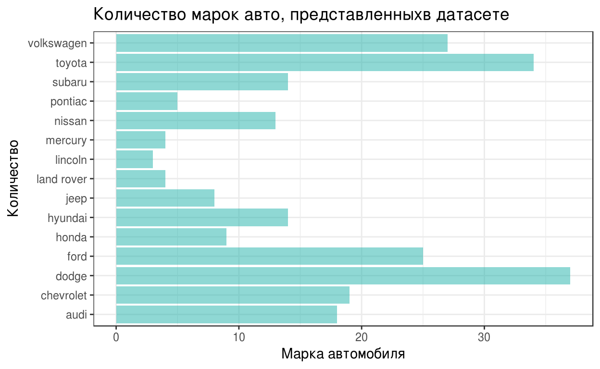
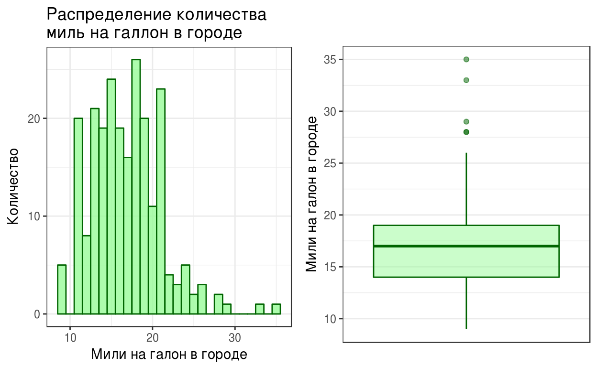

ggplot2 package
“The simple graph has brought more information to the data analyst’s mind than any other device.” — John Tukey
ggplot2 является одним из наиболее распространенных и гибких пакетов для построения любых типов графиков, способных наилучшим образом показать существующие взаимосвязи в исследуемых данных.
Любой график из пакета ggplot2 строится слоями, где каждый новый слой добавляется при помощи оператора +, общая формула для построения любого графика может быть представлена следующим образом:
ggplot(data = <DATA>) +
<GEOM_FUNCTION>(mapping = aes(<MAPPINGS>))Она может быть дополнена большим количеством дополнительных слоев и эстетик.
Основные функции для построения графиков разных типов (вместо < GEOM_FUNCTION >):
- geom_histogram() - гистограмма
- geom_bar() - столбчатая диаграмма
- geom_boxplot() - ящик с усами
- geom_point() - диаграмма рассеяния
- geom_vline() - линия
Для добавления переменных из рассматриваемого датасета на график необходимо присвоить их отдельно для оси X и оси Y в функции aes вместо < MAPPINGS >.
После присваивания переменных можно также изменить внешний вид графика, добавляя дополнительные аргументы в функцию графика. В данном уроке будут рассмотрены следующие компоненты:
- alpha - прозрачность геометрических объектов на графике
- color - цвет границ геометрических объектов на графике
- fill - цвет заливки геометрических объектов на графике
- linetype - цвет линии, добавленной на график
- shape - форма геометрических объектов на графике
- size - размер геометрических объектов на графике
- stat - статистические преобразования (сглаживание, разделение на промежутки и т.д.)
- position - определяет, как расположить геометрические объекты на графике
Различные спецификации деталей аестетик (цвет, тип линии, форма) можно также найти на сайте с документацией ggplot2
Также будут рассмотрены дополнительные функции, добавляемые отдельными слоями, для изменения реперзентации графиков:
- coord_flip() - меняет местами расположение осей
- facet_grid() - позволяет визуализировать несколько графиков сразу
- scale_fill_brewer() - применяет палитры для графиков с дополнительной группирующей переменной, добавленной через аргумент
Больше различных функций для добавления новых слоев и элементов на график можно найти на сайте с документацией пакета ggplot2
- Сайт: ggplot2.org
- Документация: docs.ggplot2.org
- Шпаргалка
Основные типы графиков:
- Гистограмма (Histogram)
- Столбчатая диаграмма (Barplot)
- “Ящик с усами” (Boxplot)
- Диаграмма рассеяния (Scatterplot)
Histogram
- используется для описания формы распределения
- показывает плотность данных (чем выше столбец диаграммы, тем выше плотность)
- строится на основе одной непрерывной переменной
- в лучшей мере реперезентирует распределение больших данных (в сравнении с диаграммой рассеяния)
Перед началом построения графика загрузим library(ggplot2), а также базу данных, содержащую наблюдения для 38 моделей автомобилей.
data(mpg)
head(mpg, n = 3) #смотрим на первые три наблюдения, представленные в базе данныхСколько миль проедут автомобили по городу на одном галлоне топлива? (Используем для построения гистограммы непрерывную переменную cty из базы данных mpg)
class(mpg$cty) #проверяем класс переменной
#данная переменная является числовой, поэтому можно использовать ее для построения гистограммыПостроение гистограммы
Строим стандартную гистограмму, добавляя к функции системы координат ggplot() слой с гистограммой geom_histogram.
ggplot() +
geom_histogram(data = mpg, mapping = aes(x = cty))Добавление подписей на осях и названия графика
Важным шагом при построении графика является добавление названий осей, а также самого графика. Для добавления данных элементов необходимо использовать функции xlab для подписи оси X, ylab для подписи оси Y, ggtitle для добавления названия графика через оператор +. Для того, чтобы вместить длинное название для графика, можно использовать \n для переноса текста на следующую строку.
ggplot() +
geom_histogram(data = mpg, aes(x = cty)) +
ggtitle("Распределение количества миль на один галон топлива\nв условиях города") +
xlab("Мили") +
ylab("Количество")Изменение интервалов для столбцов гистограммы
Так как на графике видно довольно много пробелов по оси X, стоит добавить аргумент binwidth в слой с гистограммой, чтобы увеличить интервалы для каждого столбца гистограммы. В данном случае будем использовать значение 1.
ggplot() +
geom_histogram(data = mpg, aes(x = cty), binwidth = 1) +
ggtitle("Распределение количества миль на один галон топлива\nв условиях города") +
xlab("Мили") +
ylab("Количество")График стал более плотным.
Изменение внешнего вида графика на примере гистограммы: цвета заливки и границ, прозрачность
Теперь попробуем изменить цвет самой гистограммы. Для этого после функции с указанием аэстетик добавляем аргумент fill, который позволяет заполнить цветом всю гистограмму. Для изменения цвета границ гистограммы необходимо также прописать аргумент col. Для изменения уровня прозрачности используемого для заливки цвета необходимо использовать аргумент alpha.
ggplot() +
geom_histogram(data = mpg, aes(x = cty), binwidth = 1, fill="#008080", col="#483D8B", alpha = 0.5) +
ggtitle("Распределение количества миль на один галон топлива\nв условиях города") +
xlab("Мили") +
ylab("Количество")Добавление линий на график на примере гистограммы
Теперь добавим линию, отражающую среднее значение, при помощи дополнительного слоя geom_vline(). Мы можем также менять тип, цвет и ширину линии. Для этого, после установления отображаемой аэстетики, которая выражена средним сначением миль с использованием одного галона топлива, указываем следующие переменные: linetype, color, size.
ggplot() +
geom_histogram(data = mpg, aes(x = cty), binwidth = 1, fill="#008080", col="#483D8B", alpha = 0.5) +
ggtitle("Распределение количества миль на один галон топлива\nв условиях города") +
xlab("Мили") +
ylab("Количество") +
geom_vline(aes(xintercept = mean(mpg$cty)), linetype="dashed", color="#8B0000", size=1) Изменение темы графика
Теперь добавим элемент, который будет определять общий стиль графика, при помощи функции theme_bw().
ggplot() +
geom_histogram(data = mpg, aes(x = cty), binwidth = 1, fill="#008080", col="#483D8B", alpha = 0.5) +
ggtitle("Распределение количества миль на один галон топлива\nв условиях города") +
xlab("Мили") +
ylab("Количество") +
geom_vline(aes(xintercept = mean(mpg$cty)), linetype="dashed", color="#8B0000", size=1) +
theme_bw()Интерпретация гистограммы
Гистограмма позволяет определить, каким образом распределены рассматриваемые данные. Для ответа на вопрос о нормальности распределения необходимо обратить внимание на расположение линий медианы, моды и среднего. В случае нормального распределения все эти линии будут накладываться друг на друга, так как медиана, среднее и мода равны.
Кроме того, по гистограмме можно определить существующую ассиметрию в данных. Так, гистограмма с более длинным хвостом справа будет “right skewed”. Тогда как гистограмма с более длинным хвостом слева будет являться “left skewed”.
Количество мод в распределении определяет характеристику модальности гистограммы. Наличие одной моды, то есть одного пика в данных, говорит о том, что распределение унимодально. ПО такому же принципу две моды указывают на бимодальность распределение, более двух мод на мультимодальность.
Построение фасеток для на примере гистограмм
Для сравнения распределения данных для разных переменных мы также можем использовать фасетки. Сравним распределение количества миль на галон в городе для автомобилей определенных классов (переменная class).
ggplot() +
geom_histogram(data = mpg, aes(x = cty), fill = "#6495ED", binwidth = 5) + ylab("Частота") + xlab("Количество миль на галон") + ggtitle("Распределение количества миль на галон для авто\nразных классов") + theme_minimal() + facet_grid(~class)
Histogram: exercises
- Добавьте к существующему графику линию медианы. (Функция
median)
ggplot() +
geom_histogram(data = mpg, aes(x = cty), binwidth = 1, fill="#008080", col="#483D8B", alpha = 0.5) +
ggtitle("Распределение количества миль на один галон топлива\nв условиях города") +
xlab("Мили") +
ylab("Количество") +
geom_vline(aes(xintercept = mean(mpg$cty)), linetype="dashed", color="#8B0000", size=1) +
theme_bw() +
#добавьте медиануtest_1 <- find_statement("aes(x = cty)", "variable 'cty' goes on the x axis")
test_2 <- find_call("geom_vline()", "include 'geom_vline()'")
test_3 <- find_call("geom_histogram()", "include a 'geom_histogram()' layer")
test_4 <- find_statement("mpg")
test_5 <- find_call("median()", "you didn't use median()")
USER_CODE %>% test_1 %>% test_2 %>% test_3 %>% test_4 %>% test_5- Постройте гистограмму по количеству миль на галон в условиях шоссе (переменная
hwy)
ggplot() + ...ggplot() +
geom_histogram(data = mpg, aes(x = hwy))test_1 <- find_value(match_class("ggplot"))
test_2 <- find_call("geom_histogram(whatever)", "you didn't use geom_histogram().")
test_3 <- find_call("aes(whatever)", "you didn't use aesthetics.")
test_4 <- find_statement("hwy")
test_5 <- find_statement("mpg")
USER_CODE %>% test_1 %>% test_2 %>% test_3 %>% test_4 %>% test_5- Опишите разницу между двумя гистограммами. Какое количество миль чаще проезжают автомобили в условиях города и шоссе?
- Добавьте к получившимуся графику линии моды, медианы, а также среднего. Измените внешний вид полученного графика, используя известные вам аргументы функций. Можно ли назвать полученное распределение нормальным? Почему?
В R нет отдельной функции для отображения моды, поэтому необходимо воспользоваться кодом для ее написания, представленном ниже
Mode <- function(x) {
ux <- unique(x)
ux[which.max(tabulate(match(x, ux)))]
}Mode <- function(x) {
ux <- unique(x)
ux[which.max(tabulate(match(x, ux)))]
}
ggplot() + ...Mode <- function(x) {
ux <- unique(x)
ux[which.max(tabulate(match(x, ux)))]
}
ggplot() +
geom_histogram(data = mpg, aes(x = hwy), binwidth = 1, fill="#6495ED", col="#00008B", alpha = 0.5) +
ggtitle("Распределение количества миль на один галон топлив\nв условиях шоссе") +
xlab("Мили") +
ylab("Количество") +
geom_vline(aes(xintercept = mean(mpg$hwy)), linetype="dashed", color="#8B0000", size=1) +
geom_vline(aes(xintercept = median(mpg$hwy)), linetype="dotted", color="#8B0000", size=1) +
geom_vline(aes(xintercept = Mode(mpg$hwy)), linetype="solid", color="#A9A9A9", size=1) +
theme_bw()- Постройте фасетки для сравнения распределения количества миль на галон в городе для автомобилей разных марок (
drv). Опишите различия между графиками в фасетке.
ggplot() +
geom_histogram(...) +
...ggplot() +
geom_histogram(data = mpg, aes(x = cty), fill = "#F08080", binwidth = 1) +
ylab("Частота") +
xlab("Количество миль на галон") +
ggtitle("Распределение количества миль на галон в городе\nдля авто разных марок") +
theme_minimal() +
facet_grid(~drv)t_gg <- find_value(match_class("ggplot"))
t_aes <- find_call("aes()", "you didn't use aesthetics.")
t_mpg <- find_statement("mpg", "use mpg")
t_set <- all_tests(t_gg, t_aes, t_mpg)
t_hist <- find_call("geom_histogram()", "you didn't use geom_histogram().")
t_bar <- find_call("geom_bar()", "you didn't use geom_bar().")
t_1 <- find_call("facet_grid()", "use facet_grid()")
t_2 <- find_statement("facet_grid(~drv)", "write facet_grid(~drv)")
USER_CODE %>% t_gg %>% t_hist %>% t_1 %>% t_2Bar chart
- используется в основном для отображения количественных характеристик категориальной переменной
- по умолчанию можно построить график на основе лишь одной категориальной переменной, для каждого элемента которой будет посчитано частота его встречаемости в базе данных
Какой класс автомобилей встречается в базе данных чаще всего?
ggplot() +
geom_bar(data = mpg, aes(x = class))Из графика видно, что наиболее частым классом автомобилей является suv.
Добавление нескольких категориальных переменных
Теперь добавим подписи к осям и название графика, а также посмотрим на то, как распределены классы для автомобилей, использующих разные типы привода Для этого будем использовать аргумент fill в функции для отображения аестетик.
ggplot() +
geom_bar(data = mpg, aes(x = class, fill=drv)) +
xlab("Класс автомобиля") +
ylab("Количество") +
ggtitle("Количество классов автомобилей\nдля различных групп привода")Расположение столбцов в столбчатой диаграмме с несколькими категориальными переменными
Теперь обозначим аргумент position для того, чтобы расположить каждую группу рассматриваемых приводов в отдельном столбце.
ggplot() +
geom_bar(data = mpg, aes(x = class, fill=drv), position = "dodge") +
xlab("Класс автомобиля") +
ylab("Количество") +
ggtitle("Количество классов автомобилей\nдля различных групп привода")Применение палитры на примере столбчатой диаграммы
Поменяем палитру используемых цветов в функции scale_fill_brewer(), а также изменим название параметра, указанного в легенде при помощи аргумента name. Изменим также тему графика. Подробнее о существующих палетках можно узнать в документации
ggplot() +
geom_bar(data = mpg, aes(x = class, fill=drv), position = "dodge") +
xlab("Класс автомобиля") +
ylab("Количество") +
ggtitle("Количество классов автомобилей\nдля различных типов привода") +
scale_fill_brewer(name = "Тип\nпривода", palette = "Set2") +
theme_bw()Добавление числовой переменной на ось Y в столбчатой диаграмме
Если мы все же хотим добавить какой-либо численный параметр из базы данных на ось Y, то мы можем использовать аргумент stat = "identity". Например, необходимо узнать, какой класс автомобилей проезжает наибольшее количество миль на галон в городе. Здесь мы также можем присвоить им какой-либо цвет столбцам.
ggplot() +
geom_bar(data = mpg, aes(x = class, y = cty), stat = "identity", fill = "#9400D3", alpha = 0.5) +
xlab("Класс автомобиля") +
ylab("Мили на галон") +
ggtitle("Количество миль на галон в городе\nдля различных классов автомобилей") +
theme_bw()Так, наибольшее количество миль на галон в условиях города проезжают компактные автомобили.
Изменение расположения осей на примере столбчатой диаграммы
Для более наглядного отображения данных на графике зачастую требуется поменять оси местами. Для этого необходимо к существующему графику, в данном случае столбчатой диаграмме, добавить слой с функцией coord_flip().
ggplot() +
geom_bar(data = mpg, aes(x = manufacturer), fill = "#20B2AA", alpha = 0.5) +
xlab("Количество") +
ylab("Марка автомобиля") +
ggtitle("Количество марок авто, представленныхв датасете") +
theme_bw() +
coord_flip()
Bar chart: exercises
- Постройте столбчатую диаграмму, в которой ось X будет отражать тип топлива, а ось Y - количество миль на галон на шоссе. Поменяйте оси местами при помощи функции ‘coord_flip()’.
ggplot() + ...ggplot() +
geom_bar(data = mpg, aes(x = fl, y = hwy), stat = "identity") +
coord_flip()USER_CODE %>% find_value(match_class("ggplot")) %>%
find_call("geom_histogram()", "you didn't use geom_histogram().") %>%
find_call("aes()", "you didn't use aesthetics.") %>%
find_names("hwy") %>% find_statement("mpg") %>% find_call("coord_flip()", "didn't use coord_flip()")- Постройте столбчатую диаграмму, показывающую расход топлива в городе для различных классов машин с разными потребляемыми типами топлива, используя аргументы ‘fill’ и ‘position’, а также функцию для изменения палитры ‘scale_fill_brewer()’. Опишите получившийся график.
ggplot() + ...ggplot() +
geom_bar(data = mpg, aes(x = class, y=cty, fill=fl), position = "dodge", stat = "identity") +
xlab("Класс автомобиля") +
ylab("Миль на галон") +
ggtitle("Расход топлива в городе\nдля различных классов машин\nс разными потребляемыми типами топлива") +
scale_fill_brewer(name = "Тип\nтоплива", palette = "Dark2") +
theme_bw()USER_CODE %>% find_value(match_class("ggplot")) %>%
find_call("geom_histogram()", "you didn't use geom_histogram().") %>%
find_call("aes()", "you didn't use aesthetics.") %>%
find_statement("hwy") %>% find_statement("mpg") %>%
find_statement("position", "use `position` parameter") %>%
find_statement("fill", "use `fill`") %>%
find_call("scale_fill_brewer()", "use `scale_fill_brewer()`")Boxplot
- показывает пять статистичесских величин и выбросы в данных
- отражает категориальную переменную на оси X и числовую на оси Y
- показывает распределение данных
Различия боксплота и гистограммы
Основным показателем в боксплоте является медиана, которая показана линией в середине боксплота. При этом, мы не можем наблюдать модальность распределения, рассматривая боксплот. В то время как гистограмма позволяет увидеть количество мод в данных.
В некоторых случаях боксплот может являться приемлемой заменой гистограммы для рассмотрения распреления данных. Это необходимо в тех случаях, когда особенно важно пронаблюдать выбросы, то есть экстремальные значения в данных.
Со своей стороны выбросы позволяют:
- Идентифицировать сильную ассиметрию в распределении
- Выявить ошибки при сборе и записи данных
- Дают представление об интересных свойствах данных
На данной картинке представлено краткое описание интерпретации боксплота:
knitr::include_graphics('https://pp.userapi.com/c837434/v837434250/4d1e2/qHMNcWm0qqY.jpg')
Подробнее здесь на странице 28.
Расмотрим распределение количества миль, которое способны проехать автомобили из базы данных на одном галоне топлива по городу. Для этого присваиваем переменную только оси Y, ось X оставляя без какой-либо переменной.
ggplot() +
geom_boxplot(data = mpg, aes(x = factor(0), y = cty), col = "#E52B50", fill = "#F0F8FF") + xlab(" ") + ylab("Количество миль на галон") + ggtitle("Распределение количества миль на галон") + theme_bw() #так как мы не обозначаем переменную X используем для оси X значение 0 как фактора.Также можно сравнить распределения разных групп.
Так, например, мы можем посмотреть на распределение количества миль на галон для автомобилей разных марок.
ggplot() +
geom_boxplot(data = mpg, aes(x = manufacturer, y = cty)) + xlab("Марка автомобиля") + ylab("Количество миль на галон") + ggtitle("Распределение количества миль на галон\nдля разных марок автомобилей") + theme_bw() Также как и в других типах графиков мы можем добавить дополнительный аргумент fill для рассмотрениия нескольких категориальных переменных в одном боксплоте.
Например, сравнить количество миль на галон для разных классов автомобилей с учетом их привода.
ggplot() +
geom_boxplot(data = mpg, aes(x = class, y = cty, fill=drv)) + xlab("Класс") + ylab("Количество миль на галон") + ggtitle("Распределение количества миль на галон для авто\nразных классов с учетом типа привода") + theme_bw()Boxplot: exercises
- Сравните представленные графике гистограммы и боксплота. В чем различие между гистограммой и боксплотом? В каком случае лучше применять тот или иной тип графика?

- Постройте боксплот, показывающий распределение объемов двигателей в зависимости от типа привода.
ggplot(data = mpg) + geom_boxplot(...)test_1 <- find_call("aes(x = drv, y = whatever)", "variable 'drv' goes on the x axis")
test_2 <- find_call("aes(y = displ, x = whatever)", "variable 'displ' goes on the y axis")
test_3 <- find_call("geom_boxplot()", "include a 'geom_boxplot()' layer")
test_4 <- find_statement("mpg")
USER_CODE %>% test_1 %>% test_2 %>% test_3 %>% test_4ggplot() +
geom_boxplot(data = mpg, aes(x = drv, y = displ), fill = "#FFA500", col = "#3CB371", alpha = 0.6) +
xlab("Тип привода") +
ylab("Объем двигателя") +
ggtitle("Распределение объемов двигателей в зависимости от типа привода") +
theme_bw()Scatter plot
- показывает взаимосвязи между переменными
- отражает числовые переменные на осях
При помощи диаграммы рассеяния можно посмотреть на то, какая существует ассоциация между переменными: позитивная или негативная. Позитивная ассоциация характеризуется тем, что при увеличении одной переменной увеличивается другая. Тогда как негативная ассоциация появляется, когда при увеличении одной переменной уменьшается другая.
Переменные на диаграмме рассеяния также могут оказаться независимыми, если не наблюдается никакого общего паттерна на графике.
Association does not imply causation
Важно отметить, что наличие ассоциации еще не говорит о зависимости переменных. Мы можем лишь предполагать, как одна переменная влияет на другую.
Так, мы можем построить диаграмму рассеяния для того, чтобы посмотреть, как меняется количество миль на галон в городе при изменении объема двигателя автомобиля.
ggplot() +
geom_point(data = mpg, aes(x = displ, cty)) +
xlab("Объем двигателя") +
ylab("Количество миль на галон") +
ggtitle("Распределение количества миль на галон\nдля автомобилей с разным объемом двигателя") +
theme_bw()Изменение формы в зависимости от группы
Рассмотрим различие в соотношении между количеством миль на галон и объемом двигателя для автомобилей с разными типами привода, отмечая каждый тип своей формой.
ggplot() +
geom_point(data = mpg, aes(x = displ, y = cty, shape = drv)) +
xlab("Объем двигателя") +
ylab("Количество миль на галон") +
ggtitle("Распределение количества миль на галон\nдля автомобилей с разным объемом двигателя") +
geom_smooth() +
theme_bw()Из графика видно, что взаимосвязь нелинейна. При этом, наибольшее кольчество миль на галон при маленьком объеме двигателя проезжают автомобили с передним приводом.
Упражнения
Постройте фасетку с распределением количества миль на галон для каждого класса автомобилей (class) с разным объемом двигателя. Сравните получившиеся диаграммы распределения.
ggplot(data = mpg) +
geom_point(x = ..., y = ..., shape = ...) + ...test_1 <- find_statement("displ", "variable 'displ' goes on the x axis")
test_2 <- find_statement("cty", "variable 'cty' goes on the y axis")
test_3 <- find_call("geom_point()", "include a 'geom_point()' layer")
test_4 <- find_statement("mpg")
test_5 <- find_call("facet_grid()", "include a 'facet_grid()' layer")
test_6 <- find_statement("class", "use `class` in 'facet_grid()'")
USER_CODE %>% test_1 %>% test_2 %>% test_3 %>% test_4 %>% test_5 %>% test_6ggplot() +
geom_point(data = mpg, aes(x = displ, y = cty, shape = drv)) +
xlab("Объем двигателя") +
ylab("Количество миль на галон") +
ggtitle("Распределение количества миль на галон\nдля каждого класса автомобилей с разным объемом двигателя") +
theme_bw() +
facet_grid(~class)